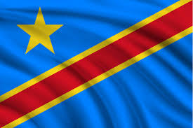

About me
My name is Jacques Kipoy, I am from Kinshasa, Democratic Republic of the Congo
Actually, I am working as an IT Support Technician, and I really like computer
Programming that's why I wanted to persue my degree in Software development.
Kinshasa, DRC
The Democratic Republic of the Congo (DRC) is a Central African nation, with Kinshasa as its capital. Covering approximately 2.34 million square kilometers, it is the second-largest country in Africa and boasts rich natural resources, including cobalt, copper, and diamonds. The population exceeds 90 million, comprising over 200 ethnic groups, with French as the official language.
